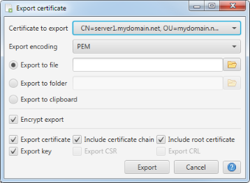

Certificate Export
This dialog is used to export the currently selected certificate. The export options include the export format, the
export target as well as the actual certificate objects to export.

Certificate data can be exported in either PEM or PKCS#12 format. Depending on the export format different export target
options are available:
- File
Everything is written to a single file.
- Folder
The selected certificate objects are written to individual files in the chosen target folder. The individual file names
are derived from the certificate's alias.
- Clipboard
The selected certificate objects are copied to the clipboard as a single text stream.
Per default the exported data will be encrypted. If this option is selected a password prompt
will come up during export to enter the export password.
The remaining options determine which certificate objects are exported:
- Export certificate
Include the certificate object in the export.
- Include certificate chain
Include the chain of issuing certificates in the export.
- Include root certificate
Include the issuing root certificate in the export.
- Export key
Include the key in the export. If this option is selected a password prompt
will come up during export to enter the key password.
- Export CSR
Include the Certificate Signing Request (CSR) in the export.
- Export CRL
Include the Certificate Revocation List (CRL) in the export.
Options not applicable for the selected entry are grayed out.